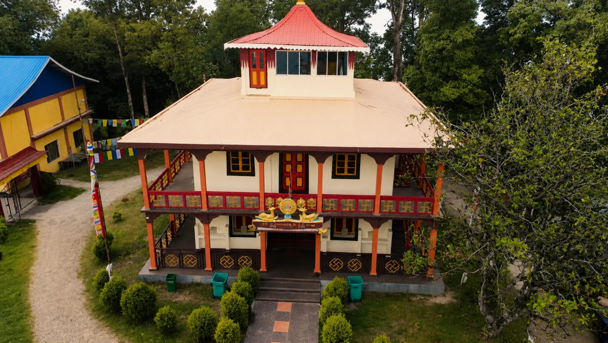

About the Monastery

Sangchen Thongdrol Ling—locally known as Ging Gompa—is the oldest Buddhist monastery in Darjeeling and part of the Nyingma tradition of Tibetan Buddhism. It stands on a gentle slope in Ging—about 10 km from Darjeeling town—with a long-standing connection to Pemayangtse Monastery of Sikkim. The monastery continues to function as an active monastic centre.
མཐོང་གྲོལ་
In Tibetan, “Thongdrol” refers to “liberation through seeing,” while “ling” denotes a sacred place or realm. The name reflects a Vajrayana understanding that encountering sacred images, rituals, and consecrated spaces can itself be a form of spiritual transformation.
The monastery is situated on a gentle slope and is locally known as Ging Gompa. In Tibetan, dgon pa denotes a solitary or wilderness place—an environment suited for contemplation and disciplined practice. The setting reflects an older pattern of monastic life, where communities lived with minimal contact with the outside world and oriented their daily rhythm around the practice of the Dharma.
Visitors often remark on the quiet atmosphere of the site. The sense of stillness, combined with the continuity of ritual practice, gives the monastery a distinct spiritual presence that has been sustained over generations.